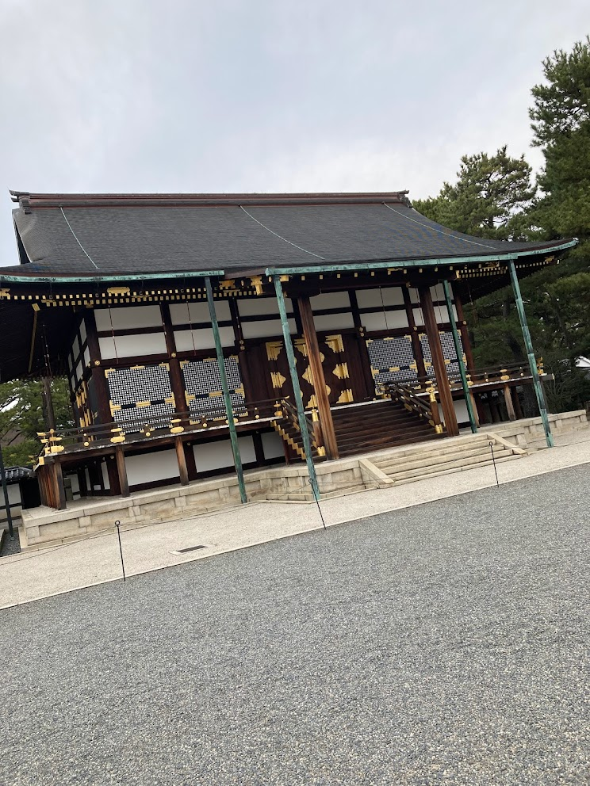
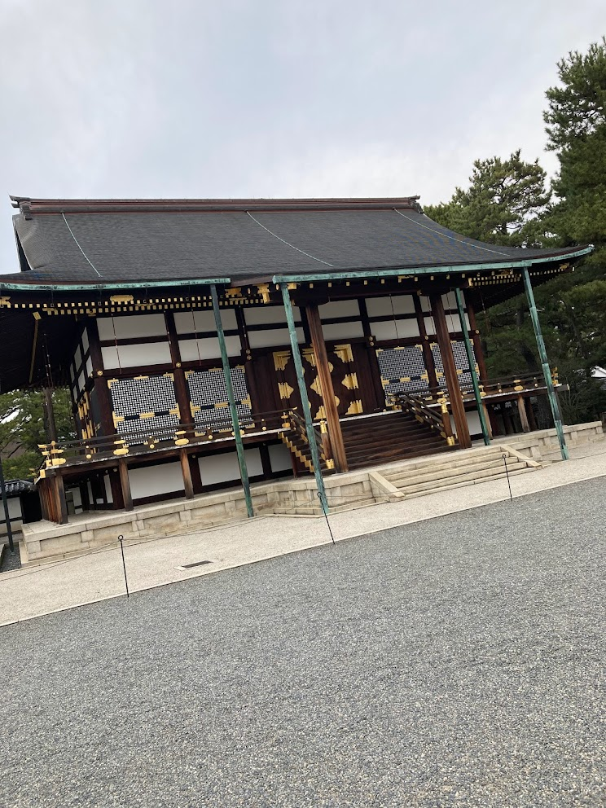

卒業旅行in京都散歩（後編）
～京都市内編～
03/13 2022
カテゴリー：部員同士での散歩
卒業旅行in京都散歩 後半戦スタートです。2日目は京都市内をメインに各所を散歩しました。京都市内の観光には京都市営バスのフリーパスがおすすめです。京都市営バスと京都市営地下鉄のどちらも使えるフリーパスがあるのですが、なんだかんだバスのみだけでも十分観光出来ますよ～♪
3月の休日ということもあり、どこもかしこも大混雑。京都市内を走る市バスは常に満員状態で少々大変なところはありましたが、様々な重要文化財へ訪れることができたのはとても良かったです。
清水寺や銀閣寺、平安神宮といった各所をのんびりと散歩し、京都文化を堪能してきました。平安神宮は意外と観光客が少なく、穴場だったりしますよ笑
 

あっという間に京都散歩の2日間は終ってしまいました。学生生活の締めくくりをできたと同時に、素敵なメンバーに会えた事を感謝したいと思います。来年はどんな散歩サークルになるのかな～ 遠くから見守っていきたいと思います(笑)
前の記事 →